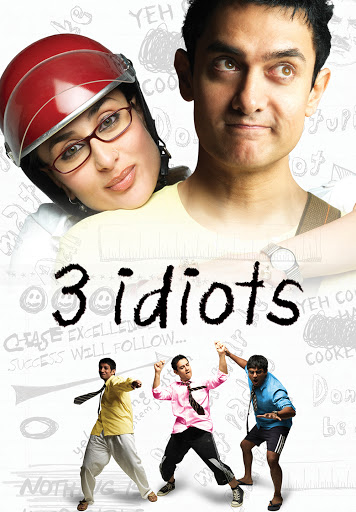

3 Idiots is a 2009 Indian Hindi-language coming-of-age comedy-drama film written, edited and directed by Rajkumar Hirani, co-written by Abhijat Joshi. 3 Idiots is a movie starring Aamir Khan, Madhavan, and Mona Singh. Two friends are searching for their long lost companion. 3 Idiots is a Hindi album released in 2021. There are a total of 7 songs in 3 Idiots. The songs were composed by Shantanu Moitra, a talented musician. 3 Idiots Is An Award Winning Bollywood Comedy Movie, Directed By Rajkumar Hirani, Starring Aamir Khan And Kareena Kapoor In The Lead Roles.

Mohammed Aamir Hussain Khan (pronounced born 14 March 1965) is an Indian actor, filmmaker, and television personality who works in Hindi films. Referred to as "Mr. Perfectionist" in the media, he is know for his work in a variety of film genres, particularly in films which raise social issues like education and gender equality, or which have a positive impact on society in India or abroad. Through his career spanning over 30 years, Khan has established himself as one of the most notable actors of Indian cinema. Khan is the recipient of numerous awards, including nine Filmfare Awards, four National Film Awards, and an AACTA Award. He was honoured by the Government of India with the Padma Shri in 2003 and the Padma Bhushan in 2010,[7] and received an honorary title from the Government of China in 2017.
1.Aamir Khan
2.Sharman Joshi
3.Madhavan
4.Kareena Kapoor
5.Omi Vaidya
Rajkumar Hirani
Sanjay Wandrekar
Vidhu Vinod Chopra